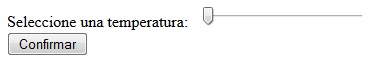
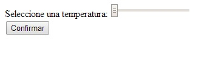
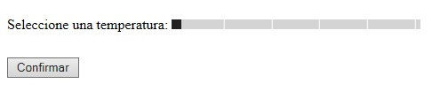

Otra control que agrega el HTML5 es una barra de selección de un valor.
En lugar de utilizar un control input de tipo text para cargar un número podemos seleccionar el valor con el mouse o con el dedo según el dispositivo que estamos utilizando.
Para definir una barra de selección inicializamos la propiedad type con el valor range. Luego podemos inicializar las propiedades min y max para fijar el valor mínimo y el máximo.
Solicitar la carga de una temperatura entre 0 y 100, utilizar una barra de selección.
<!DOCTYPE HTML>
<html>
<head>
<title>Prueba</title>
</head>
<body>
<form action="#">
Seleccione una temperatura:
<input type="range" id="temperatura" min="0" max="100">
<br>
<input type="submit" value="Confirmar">
</form>
</body>
</html>
Como podemos ver definimos el elemento input inicializando la propiedad type con el valor range, algo similar hacemos con las propiedades min y max:
<input type="range" id="temperatura" min="0" max="100">
Si bien todos los navegadores modernos implementan este control la forma de mostrarlos es bastante diferente:
Firefox:
Chrome:
Internet Explorer
Y además no nos muestran en pantalla el número seleccionado (salvo el Internet Explorer) por lo que debemos implementar una función en Javascript si queremos que quede a la vista el valor seleccionado.
Solicitar la carga de una temperatura entre 0 y 100, utilizar una barra de selección. Mostrar en un elemento span el valor seleccionado en el range.
<!DOCTYPE HTML>
<html>
<head>
<title>Prueba</title>
<script>
addEventListener('load',inicio,false);
function inicio()
{
document.getElementById('temperatura').addEventListener('change',cambioTemperatura,false);
}
function cambioTemperatura()
{
document.getElementById('temp').innerHTML=document.getElementById('temperatura').value;
}
</script>
</head>
<body>
<form action="#">
Seleccione una temperatura:
<input type="range" id="temperatura" min="0" max="100">
<span id="temp">0</span>
<br>
<input type="submit" value="Confirmar">
</form>
</body>
</html>
Como vemos disponemos un bloque de Javascript para capturar el evento change de la barra de selección. Cuando se dispara este evento se ejecuta la función cambioTemperatura donde modificamos el contenido el elemento span con el valor actual de la barra de selección:
<script>
addEventListener('load',inicio,false);
function inicio()
{
document.getElementById('temperatura').addEventListener('change',cambioTemperatura,false);
}
function cambioTemperatura()
{
document.getElementById('temp').innerHTML=document.getElementById('temperatura').value;
}
</script>